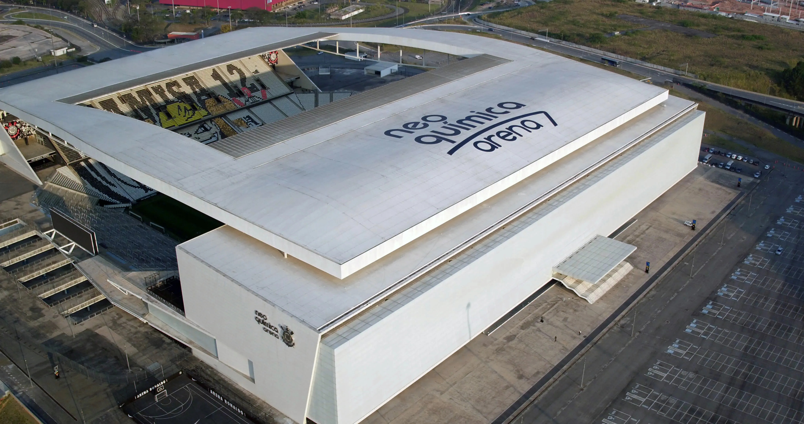
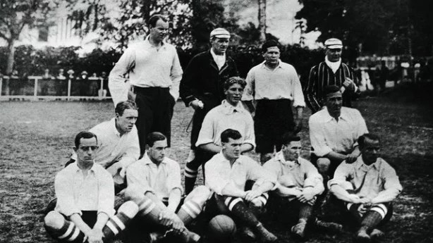
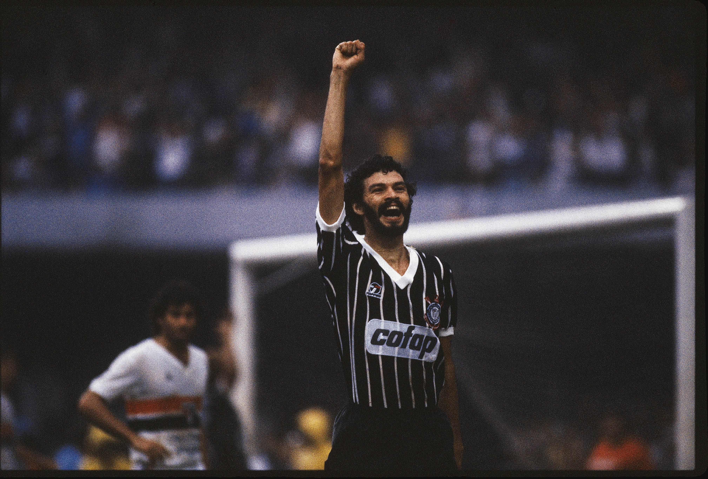

A Neo Química Arena, a majestosa casa do Timão, é mais do que um estádio: é um santuário de sonhos e glórias para a Fiel Torcida. Inaugurada em 10 de maio de 2014, a arena foi palco da abertura da Copa do Mundo, mas sua verdadeira história é contada nos dias de jogos, quando se transforma em um caldeirão alvinegro. Com uma arquitetura imponente e moderna, a Neo Química Arena é o lar onde a história do clube é vivida em tempo real, onde cada grito da torcida ecoa e cada gol se torna uma página imortal na trajetória do Corinthians. Ela representa a nova era do clube, unindo a tradição de sua história com a grandiosidade de seu futuro.
O Time do Povo: Fundação e Identidade
O Sport Club Corinthians Paulista nasceu da paixão de cinco operários, no dia 1º de setembro de 1910, no bairro do Bom Retiro, em São Paulo. Inspirados por uma equipe de futebol amadora inglesa que excursionava pelo Brasil, o Corinthian Football Club, eles decidiram fundar um clube que representasse a classe trabalhadora e o povo. Desde então, o Corinthians se consolidou não apenas como uma instituição esportiva, mas como um símbolo de luta, resistência e superação. Com suas cores alvinegras e o mascote Mosqueteiro, o clube representa a lealdade, a bravura e a união de uma nação de torcedores que, com a força de sua paixão, transformaram o "Time do Povo" em um dos maiores fenômenos do futebol mundial.
Estádio: O Santuário Alvinegro
Títulos: A Conquista de Glórias Eternas
A história do Corinthians é uma coleção de vitórias épicas e conquistas inesquecíveis. O clube ostenta o orgulho de ser o primeiro e único time brasileiro a conquistar o Mundial de Clubes da FIFA por duas vezes, em 2000 e 2012, esta última após a tão sonhada e invicta conquista da Copa Libertadores da América. No cenário nacional, seus sete títulos do Campeonato Brasileiro da Série A e as três Copas do Brasil marcam a supremacia do Timão. Mas talvez o troféu mais emblemático seja o 30º Campeonato Paulista, em 1977, que quebrou um jejum de 23 anos e libertou uma geração inteira de torcedores que ansiava por um título. Cada taça é um capítulo de luta, perseverança e uma prova inquestionável da grandeza do Corinthians.

Os Heróis do Povo
Mais do que vitórias, a história do Corinthians é feita de ídolos, homens que vestiram o manto alvinegro e eternizaram seus nomes no coração da Fiel. O genial Doutor Sócrates, símbolo da Democracia Corinthiana; o mágico Rivellino, com sua canhota poderosa; o artilheiro Marcelinho Carioca, o "Pé de Anjo", que transformava faltas em gols; e o paredão Cássio, o goleiro com mais jogos pelo clube e o herói das maiores defesas da história. Zico e Ronaldo Fenômeno também deixaram suas marcas, mesmo que por um período menor, e a paixão de Luizinho, o "Pequeno Polegar", e a dedicação de Zé Maria e Wladimir, recordista de atuações, inspiram até hoje. Eles são a essência do clube, a personificação de sua alma guerreira.
Marcas Históricas: Momentos que Marcaram Gerações
A história do Corinthians é repleta de momentos que transcendem o futebol e se tornaram marcos sociais e culturais. A "Invasão Corinthiana" de 1976, quando mais de 70 mil torcedores transformaram o Maracanã em um mar preto e branco, foi uma demonstração de paixão e força sem precedentes. Nos anos 80, a "Democracia Corinthiana", liderada por Sócrates, foi um dos movimentos mais importantes do esporte mundial, onde jogadores e comissão técnica decidiam a gestão do clube em votações, defendendo a liberdade de expressão e a democracia em plena ditadura militar. O épico título de 1977, que quebrou o jejum e levou milhões de corações ao delírio, e a conquista invicta da Libertadores em 2012, que coroou a hegemonia do clube, são exemplos de como o Corinthians não apenas joga futebol, mas escreve a própria história.